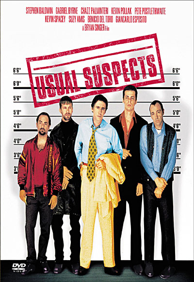

|  |
1996 - Usual SupectsThe greatest trick the devil ever pulled was convincing the world he didn't exist," says con man Kint (Kevin Spacey), drawing a comparison to the most enigmatic criminal of all time, Keyser Soze. |
Comté - Marcel PetiteMarcel Petite Fort St. Antoine Comté was the first and, for a time, only cheese which we imported; it is a cheese of such singular character, quality and versatility that we built our business upon it. |
|
Frutta e Grappa - OccelliThis is a cheese made from sheep’s and cow’s milk. Left to age for a minimum of 12 months, it is then refined with the addition of fruit or Grappa di Moscato (Muscat Grappa) that enhance even further its organoleptic qualities, thus offering a truly “unique” sensorial experience.” |
This page has been coded during the FullStack program @LeWagon. That was probably the best experience of my entire life.